Le Bitcoin:
la partie moins connus du Bitcoin, le fonctionnement
Ici vous avez une photo du logo de Bitcoin:


Le Bitcoin est une cryptomonnaie décentralisé sans banque centrale ou administrateur. Cette monnaie peut être envoyé entre utilisateur grâce au système pair-a-pair du network de bitcoin sans passer a des systèmes intermédiaires. Les transactions sont vérifiées par des nœuds de réseaux avec la cryptographie, ces transactions sont aussi mises dans un registre partage publique appelle une blockchain. Les Bitcoins sont créés avec le processus de « mining ». Cette cryptomonnaie a été inventé en 2008 par un ou des individues anonymes avec l’alias de Satoshi Nakamoto; la monnaie a commencé à être utilisée en 2009 lors de la publication du logiciel open source. Le Bitcoin peut être échangé pour d’autre monnaie, produits ou services. Le Bitcoin est infame pour son utilisation dans les marches noirs et le cout d’électricité et donc d’empreinte carbone lors du mining. En general le Bitcoin en tant que monnaie est connus mais moins de personnse sachent comment le systeme fonctionne.
La blockchain de bitcoin est comme un registre public qui enregistre les transactions de bitcoin. Il est implémenté avec une chaine de « blocs ». Un réseau de nœud de communication maintient la blockchain.
Les Transactions
Les transactions sont de forme :
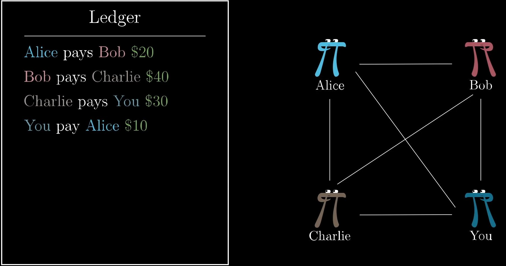
Les Signatures Numeriques
Chaque transaction contient une signature numérique pour prouver les transactions, ceci marche car chaque personne a une paire d’une clé publique et d’une clé privée :
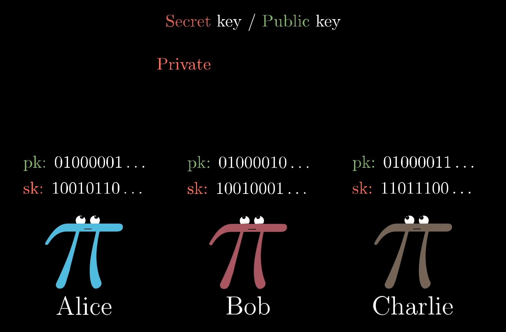
Avec ces clés et le contenu du message on crée une signature de 256bits en binaire, même si on change seulement le contenu la signature diffère.
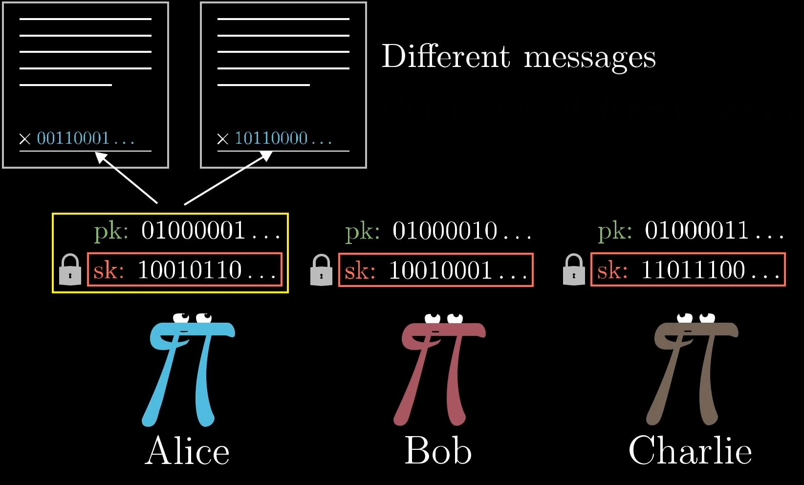
La signature se crée donc à partir de la clé privée et le contenu du message. Cette fonction est de sorte :
Il existe aussi une fonction qui permet de vérifier si la signature est réelle, c’est ici ou la clé publique est utilisée. Cette fonction retourne Vrai ou Faux qui indique si la signature a été produit à partir de la clé privée associe à la clé publique. Cette fonction est de sorte :
Pour éviter que le même message avec la même signature soit utilisé, chaque transaction a une identité unique (comme l’ordre).
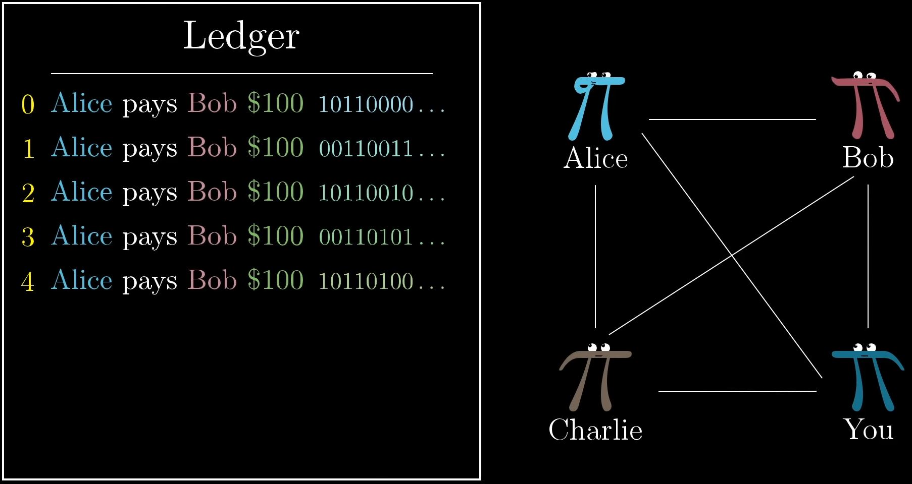
La Decentralisation
Le registre est décentralisé, cela veut dire que chaque personne a un registre individuellement.
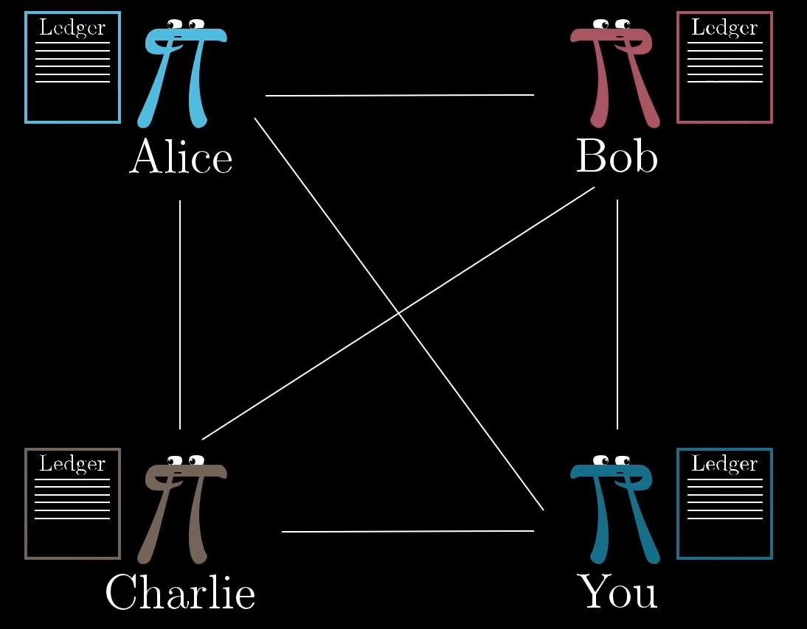
et donc a chaque transaction la personne diffuse la transaction pour que tous le monde l'ai
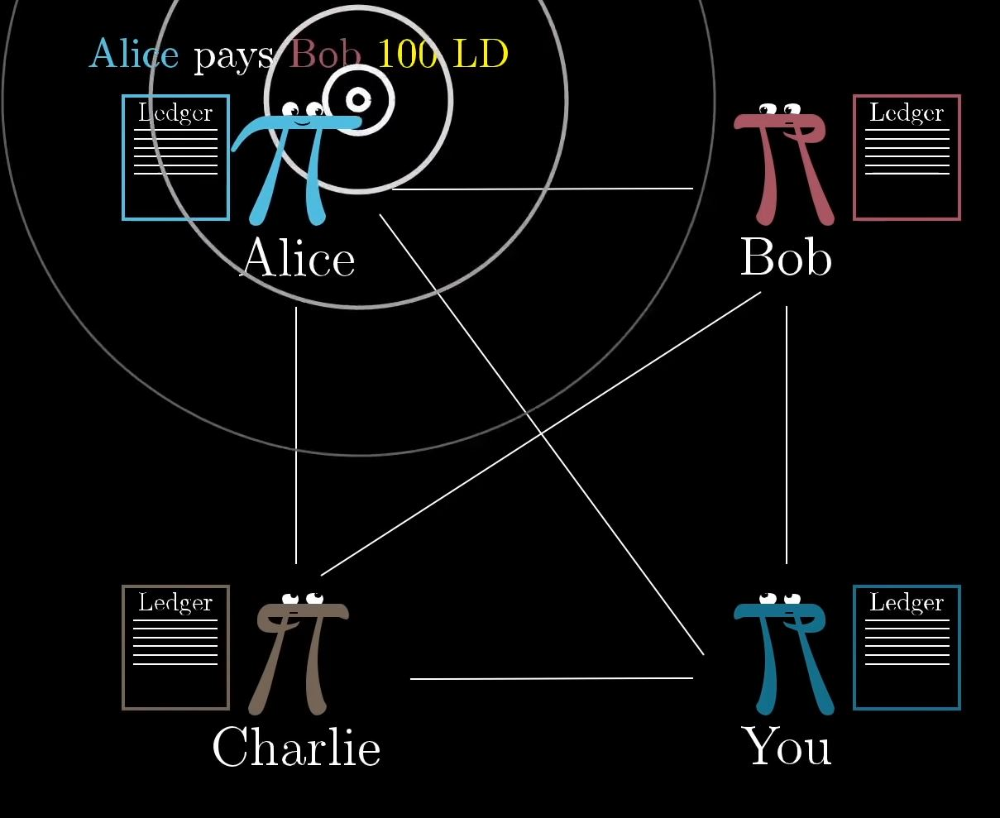
Les Fonctions de Hachages Cryptographiques
La decentralisation ne marche qu’à cause du protocole de Bitcoin qui permet d’assurer que chaque individu est le même contenu dans le registre. Bitcoin regarde quel registre a le plus de travail de calcul en utilisant les fonctions de hachage cryptographique, l’idée générale est que si on utilise comme base le travail de calcul pour savoir ce qu’on a confiance en, c’est possible de faire en sorte que les transactions frauduleuses et les registres contradictoires demanderai un travail de calcul irréalisable.Une fonction de hachage cryptographique marche comme ceci :
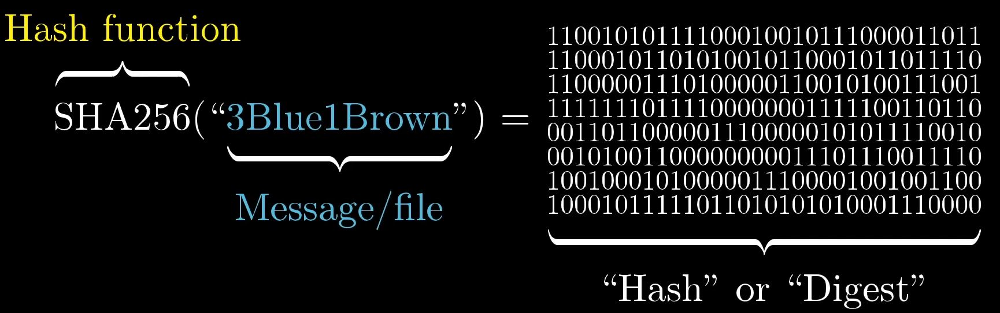
Cette suite de bits peut sembler aléatoire mais ça retourne toujours le même résultat avec la même entrée, cependant si on change même juste un symbole de l’entrée le résultat change complètement. La fonction que Bitcoin utilise est SHA256, elle est utilisée car on ne peut pas savoir l’entrée juste avec le résultat. Donc pour trouver l’entrée d’un résultat donnée par SHA256, il n’existe aucune meilleure méthode que d’essayer des entrées jusqu’à ce que l’on trouve le résultat.
La Preuve de Travail
En utilisant SHA256 on peut créer des preuves de travails. Ceci marche lorsqu’on trouve un nombre qui lorsqu’on met tout le contenu du registre et on ajoute ce nombre a la fin dans SHA256, le résultat donne une suite de bits dont par exemple les 30 premiers bits contiennent seulement des 0 (la probabilité de ceci est d’approximativement 1 sur 1 milliards de milliards). Comme précédemment dit pour trouver l’entrée en SHA256 qui donne une suite de bits dont les 30 premiers bits sont des 0, la seule méthode est d’essayer des entrées jusqu’à ce que le résultat convient. Ce nombre trouvé devient alors la preuve de travail, comme la preuve de travail est associée avec le contenu du registre, si un élément du contenu du registre change, le Hash changerai complétement.
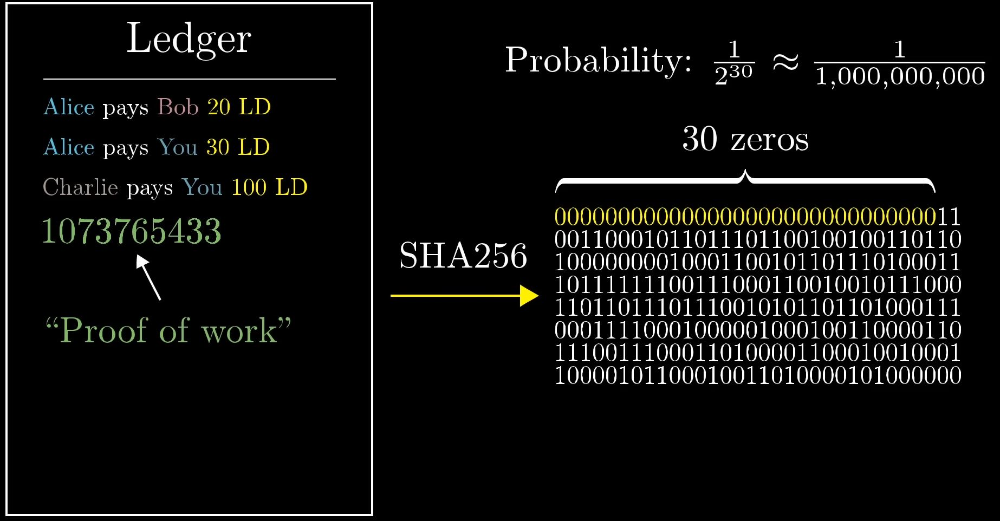
Les Blocs et les Chaines de Blocs
Lorsqu’on revient sur la situation ou tous les individus ont un registre, pour trouver un moyen pour que tous le monde est le même registre, comme dit précédemment le moyen est d’utiliser le registre avec le plus de travail de calcul. Pour savoir lequel a le plus de travail de calcul, on organise ces registres en
« blocs » ou chaque bloc contient la liste des transactions accompagné d’une preuve de travail. (Une transaction est vérifiée par sa signature un bloc est vérifié par sa preuve de travail.).
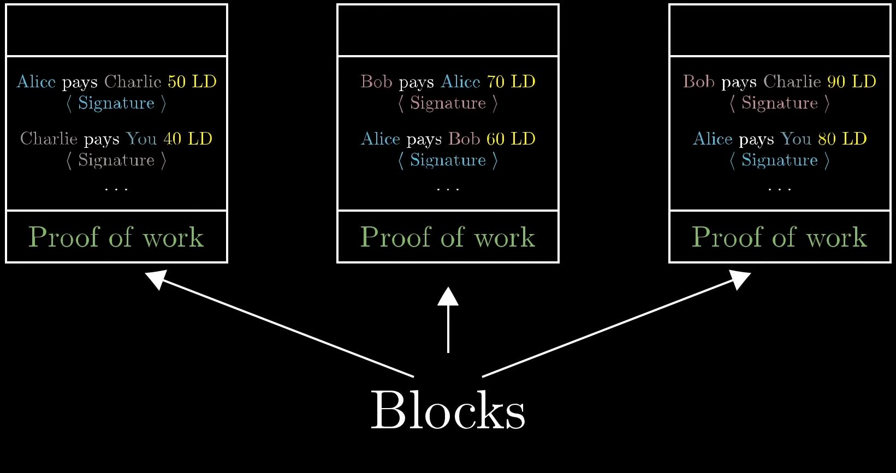
Puis pour organiser ces blocs à un ordre, on inclut le Hash du bloc précèdent au début de chaque bloc, ceci permet que les blocs ne puissent pas être change sans casser toutes cette « chaine ». Ceci est appelée le « blockchain »
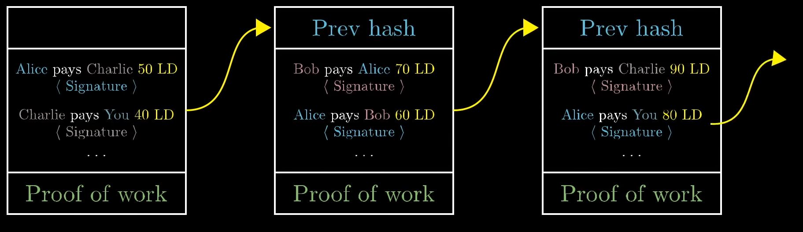
Dans sa forme la plus abstraite, le fait de miner une cryptomonnaie consiste à fournir un service au réseau de la dite monnaie en échange d'une récompense pécuniaire
La creation des blocs
Pour creer un bloc, les createurs de blocs vont enregistrer les transactions diffusées puis les mettres dans un bloc puis chercher une preuve de travail, apres avoir trouvée la preuve de travail, le bloc et diffusé.
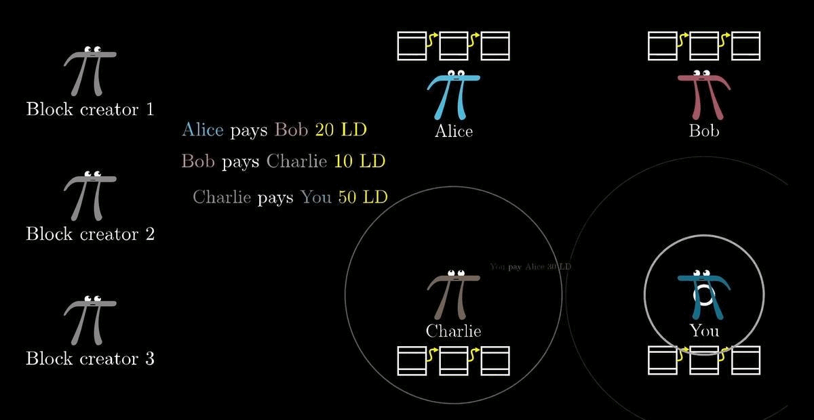
La Recompense par Bloc
Pour récompenser le créateur de bloc lorsqu'il crée un bloc, on met une transaction au début du bloc ou le créateur reçoit un montant en bitcoin. Ceci est appelée la récompense par bloc, cette transaction est spéciale : elle ne provient de personne, ce qui veut dire qu’elle n’a pas de signature numérique et on ajoute de la monnaie dans l’économie a chaque bloc. Ce processus est appelé le mining.
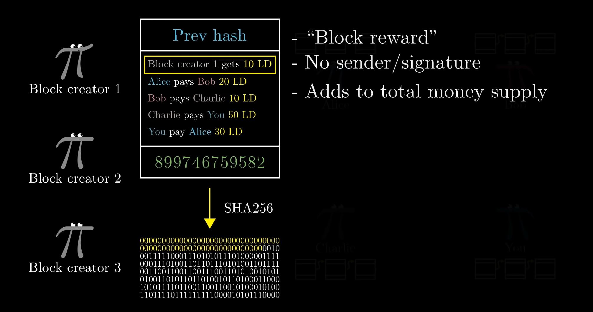